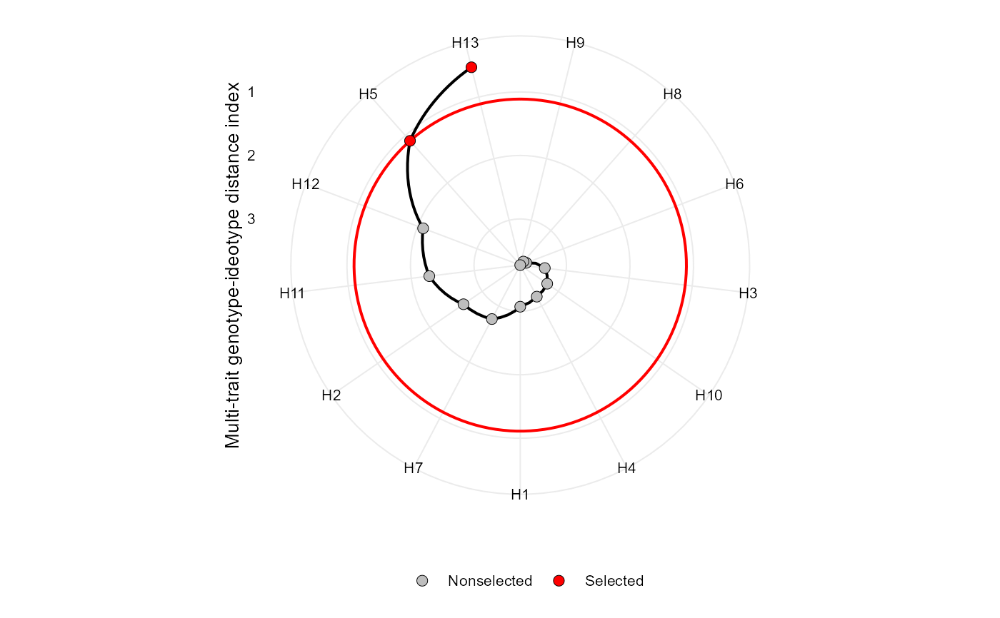

Makes a radar plot showing the multi-trait genotype-ideotype distance index
# S3 method for mgidi plot( x, SI = 15, radar = TRUE, type = "index", position = "fill", rotate = FALSE, genotypes = "selected", n.dodge = 1, check.overlap = FALSE, x.lab = NULL, y.lab = NULL, title = NULL, arrange.label = FALSE, size.point = 2.5, size.line = 0.7, size.text = 10, width.bar = 0.75, col.sel = "red", col.nonsel = "gray", legend.position = "bottom", ... )
| x | An object of class |
|---|---|
| SI | An integer (0-100). The selection intensity in percentage of the total number of genotypes. |
| radar | Logical argument. If true (default) a radar plot is generated
after using |
| type | The type of the plot. Defaults to |
| position | The position adjustment when |
| rotate | Logical argument. If |
| genotypes | When |
| n.dodge | The number of rows that should be used to render the x labels. This is useful for displaying labels that would otherwise overlap. |
| check.overlap | Silently remove overlapping labels, (recursively) prioritizing the first, last, and middle labels. |
| x.lab, y.lab | The labels for the axes x and y, respectively. x label is set to null when a radar plot is produced. |
| title | The plot title when |
| arrange.label | Logical argument. If |
| size.point | The size of the point in graphic. Defaults to 2.5. |
| size.line | The size of the line in graphic. Defaults to 0.7. |
| size.text | The size for the text in the plot. Defaults to 10. |
| width.bar | The width of the bars if |
| col.sel | The colour for selected genotypes. Defaults to |
| col.nonsel | The colour for nonselected genotypes. Defaults to |
| legend.position | The position of the legend. |
| ... | Other arguments to be passed from |
An object of class gg, ggplot.
Tiago Olivoto tiagoolivoto@gmail.com
# \donttest{ library(metan) model <- gamem(data_g, gen = GEN, rep = REP, resp = c(KW, NR, NKE, NKR))#> Evaluating trait KW |=========== | 25% 00:00:00 Evaluating trait NR |====================== | 50% 00:00:00 Evaluating trait NKE |================================ | 75% 00:00:00 Evaluating trait NKR |===========================================| 100% 00:00:00#>#>#>#>#> --------------------------------------------------------------------------- #> P-values for Likelihood Ratio Test of the analyzed traits #> --------------------------------------------------------------------------- #> model KW NR NKE NKR #> Complete NA NA NA NA #> Genotype 0.0253 0.0056 0.00952 0.216 #> --------------------------------------------------------------------------- #> Variables with nonsignificant Genotype effect #> NKR #> ---------------------------------------------------------------------------#> #> ------------------------------------------------------------------------------- #> Principal Component Analysis #> ------------------------------------------------------------------------------- #> # A tibble: 4 x 4 #> PC Eigenvalues `Variance (%)` `Cum. variance (%)` #> <chr> <dbl> <dbl> <dbl> #> 1 PC1 2.42 60.6 60.6 #> 2 PC2 1.19 29.8 90.3 #> 3 PC3 0.32 8 98.3 #> 4 PC4 0.07 1.66 100 #> ------------------------------------------------------------------------------- #> Factor Analysis - factorial loadings after rotation- #> ------------------------------------------------------------------------------- #> # A tibble: 4 x 5 #> VAR FA1 FA2 Communality Uniquenesses #> <chr> <dbl> <dbl> <dbl> <dbl> #> 1 KW -0.9 0.04 0.82 0.18 #> 2 NR -0.92 -0.12 0.87 0.13 #> 3 NKE -0.7 -0.69 0.96 0.04 #> 4 NKR 0.05 -0.98 0.97 0.03 #> ------------------------------------------------------------------------------- #> Comunalit Mean: 0.9033994 #> ------------------------------------------------------------------------------- #> Selection differential #> ------------------------------------------------------------------------------- #> # A tibble: 4 x 11 #> VAR Factor Xo Xs SD SDperc h2 SG SGperc sense goal #> <chr> <chr> <dbl> <dbl> <dbl> <dbl> <dbl> <dbl> <dbl> <chr> <dbl> #> 1 KW FA1 147. 163. 16.2 11.0 0.659 10.7 7.27 increase 100 #> 2 NR FA1 15.8 17.4 1.63 10.3 0.736 1.20 7.60 increase 100 #> 3 NKE FA1 468. 532. 64.0 13.7 0.713 45.6 9.74 increase 100 #> 4 NKR FA2 30.4 31.2 0.814 2.68 0.452 0.368 1.21 increase 100 #> ------------------------------------------------------------------------------ #> Selected genotypes #> ------------------------------------------------------------------------------- #> H13 H5 #> -------------------------------------------------------------------------------# }